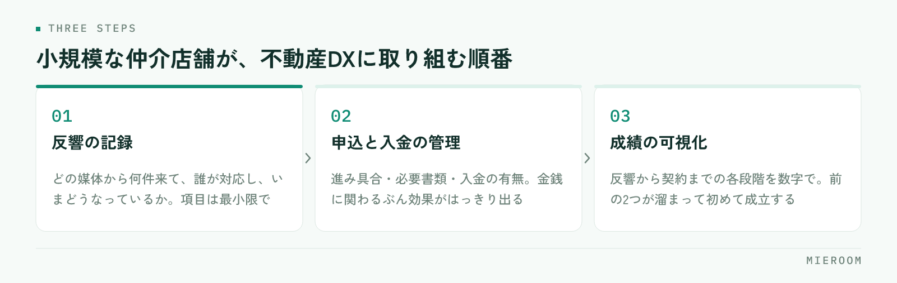

不動産DXと言われても、何から手をつければいいのか分からない。小規模な賃貸仲介店舗では、これがふつうの感覚だと思います。不動産DXとは、店舗の業務を「記録が残り、後から見返せる形」に置き換えていくことです。最新のツールを入れることそのものではありません。
この記事の結論
不動産DXは、紙とExcelで持っている情報を、一か所に集めて共有できる状態にするところから始まります。小規模店舗が取り組む順番は、反響の記録 → 申込・入金の管理 → 成績の可視化。いきなり全部を変えようとすると、必ず途中で止まります。
不動産DXとは、道具の話ではなく記録の話
DX（Digital Transformation）という言葉は幅が広く、業界によって指す内容も変わります。賃貸仲介の現場に引き寄せて言えば、これまで人の頭と紙の中にあった情報を、誰でも見られる記録に変えることです。
店舗を回しているのは、たいてい個々のスタッフの記憶です。あの反響は誰が追っているか、あの申込は書類がどこまで揃っているか、今月の売上はいくらになりそうか。聞けば分かるけれど、聞かないと分からない。この状態が続くと、担当者が休んだ日に業務が止まり、人が増えても引き継ぎに時間がかかります。
記録に変わると、確認のための会話が減ります。そのぶん、接客と物件探しに時間を使えるようになる。これが不動産DXで最初に得られる変化です。
デジタル化とDXは、どこが違うのか
紙をPDFにする、FAXをメールに変える。これらはデジタル化であって、それ自体はDXではありません。違いは、業務の進め方そのものが変わるかどうかです。
| デジタル化 | DX | |
|---|---|---|
| やること | 紙や手作業を電子に置き換える | 業務の流れと分担を組み替える |
| 変わる範囲 | その作業だけ | 前後の工程・確認のしかた |
| 例 | 申込書をPDFで保存する | 申込の進み具合を全員が同じ画面で見る |
| 効果の出方 | 保管場所が減る | 確認の手間と抜け漏れが減る |
申込書をスキャンしてフォルダに入れただけでは、「あの申込どうなってる？」という会話はなくなりません。どこまで進んでいるかが画面を見れば分かる状態になって初めて、その会話が不要になります。
デジタル化はDXの前段階として必要ですが、そこで止まると手間だけが増えます。この違いは、Excel管理からの卒業でも具体的に触れています。
小規模店舗が取り組む順番
一度に全部を変えようとすると、入力の負担が増えた割に何も見えない、という状態になります。順番があります。

はじめに手をつけるのは反響の記録です。どの媒体から何件来て、誰が対応し、いまどうなっているか。ここが残っていないと、広告費の判断も、追客の抜け漏れの把握もできません。入力項目は最小限で構いません。
次が申込と入金の管理です。申込の進み具合、必要書類の揃い具合、入金の有無。金銭に関わる部分なので、記録に変えたときの効果がはっきり出ます。
最後が成績の可視化です。反響から契約までの各段階が数字で見えるようになると、指導の材料になります。ただしこれは、前の2つが記録として溜まっていないと成立しません。順番が逆になると、見るべき数字が出てこないまま画面だけが増えます。
つまずくのは、たいてい同じ3か所
ひとつ目は、入力項目を最初から細かくしすぎること。埋まらない欄が並ぶと、誰も入力しなくなります。ふたつ目は、既存のExcelと新しい仕組みを並行させること。二重入力になり、どちらも信用できなくなります。みっつ目は、店長だけが使っている状態。全員が同じ画面を見ないと、確認の会話は減りません。
もうひとつ、見落とされやすいのが過去データの扱いです。これまでのExcelを捨てる必要はありませんが、どこまでを新しい仕組みに移すかは最初に決めてください。「全部移す」と決めて作業が終わらず、そのまま自然消滅するのがよくある流れです。動かすのは今月分から、過去は参照用に残す。この割り切りが、定着するかどうかを分けます。
定着そのものについては、業務改善ツールを定着させるで手順をまとめています。
最初の1か月で進められること
大がかりな計画は要りません。次の順に進めると、1か月で形になります。
- いまの業務のうち、「聞かないと分からない情報」を3つ書き出す
- その3つが、どこに記録されているか（人の記憶・紙・Excel・メール）を確認する
- 記録先を一か所に決める。最初は反響だけで構わない
- 入力する項目を5つ以内に絞り、いつ入力するかを決める（来店直後・その日の終わり、など）
- 2週間続けて、埋まらない項目を削る。足りない項目を足す
大事なのは、最初から完成形を目指さないことです。入力する人が続けられる形に削っていく作業が、そのまま自店に合った運用になります。
新しい仕組みを入れるかどうかは、「入力の手間が、確認の手間より小さいか」で判断してください。入力に5分かかっても、電話や口頭での確認が10分減るなら続きます。逆に、入力しても誰も見ない画面は、どれだけ高機能でも使われなくなります。
人が増える前に、記録の形を決めておく
不動産DXが必要になるのは、たいてい人が増える少し前です。スタッフが2〜3名のうちは、会話で足ります。ここから増えると、会話だけでは追えなくなります。
新しく入った人に「このやり方を覚えてください」と示せるものがあるかどうか。記録の形が決まっていれば、引き継ぎは画面の見方を教えるだけで済みます。決まっていなければ、前任者の頭の中を聞き取る作業から始めることになります。
開業したばかりの店舗や、これから人を増やす段階であれば、業務が複雑になる前に記録の形を決めるほうが、後から直すより楽です。成績の見え方が店舗にどう働くかは、成績を「見える化」した話も合わせて読んでみてください。
よくある質問
スタッフが2名の店舗でも、DXに取り組む意味はありますか？
パソコンが苦手なスタッフがいても進められますか？
いまのExcelは捨てないといけませんか？
まとめ：順番を決めれば、DXは特別なことではない
不動産DXとは、店舗の情報を記録に変え、誰でも見返せる状態にすることです。道具を入れることが目的ではなく、確認の会話を減らし、接客に時間を戻すことが目的になります。
小規模な仲介店舗であれば、反響の記録から始めて、申込と入金、最後に成績の可視化へ。この順番を守れば、入力の負担が増えるだけで終わることはありません。過去データは参照用に残し、今月分から動かす。それで十分に前へ進みます。
ミエルームは、反響管理・申込管理・売上管理・接客成績の可視化を一つの画面でつなぐ、賃貸仲介向けの業務管理システムです。Excelデータの取り込みと初期設定の代行にも対応しており、最短即日でスタートできます。どの機能がどこまでできるかは機能・事例のページでご確認いただけます。実際の画面を見てから判断したい場合は、デモアカウントの発行もご相談ください。